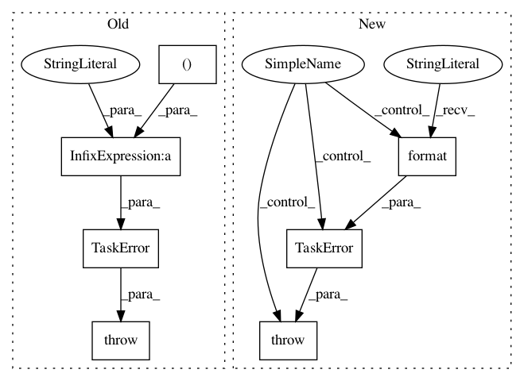

23982cc23bc0d446da88c1753c57410194c21e0b,src/python/pants/backend/core/tasks/reflect.py,,entry_for_one_class,#Any#Any#,260
Before Change
if inspect.ismethod(attr):
methods.append(entry_for_one_method(attrname, attr))
continue
raise TaskError("@manual.builddict on non-method %s within class %s "
"but I only know what to do with methods" %
(attrname, nom))
return entry(nom,
classdoc_rst=cls.__doc__,
classdoc_html=rst_to_html(dedent_docstring(cls.__doc__)),
After Change
if inspect.ismethod(attr):
methods.append(entry_for_one_method(attrname, attr))
else:
raise TaskError("@manual.builddict() on non-method {0}"
" within class {1}".format(attrname, nom))
return entry(nom,
classdoc_rst=cls.__doc__,
classdoc_html=rst_to_html(dedent_docstring(cls.__doc__)),
In pattern: SUPERPATTERN
Frequency: 3
Non-data size: 7
Instances
Project Name: pantsbuild/pants
Commit Name: 23982cc23bc0d446da88c1753c57410194c21e0b
Time: 2014-10-09
Author: mister@lahosken.san-francisco.ca.us
File Name: src/python/pants/backend/core/tasks/reflect.py
Class Name:
Method Name: entry_for_one_class
Project Name: pantsbuild/pants
Commit Name: 9f9c1a951607e1b222402194ad817e90169cd08d
Time: 2015-02-10
Author: rbcommons@tla.org
File Name: src/python/pants/backend/jvm/tasks/junit_run.py
Class Name: Cobertura
Method Name: report
Project Name: pantsbuild/pants
Commit Name: 9f9c1a951607e1b222402194ad817e90169cd08d
Time: 2015-02-10
Author: rbcommons@tla.org
File Name: src/python/pants/backend/jvm/tasks/junit_run.py
Class Name: Cobertura
Method Name: instrument